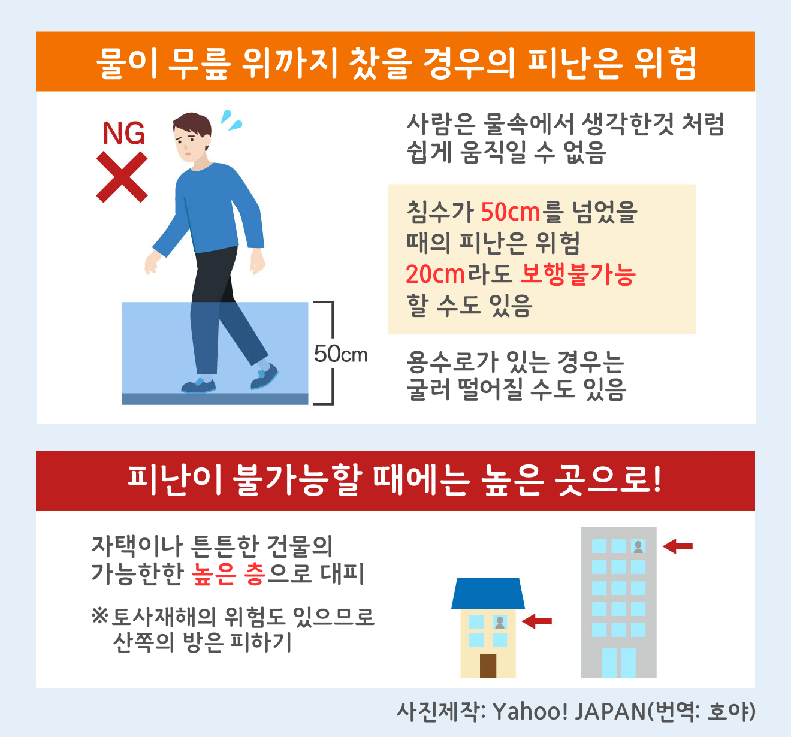
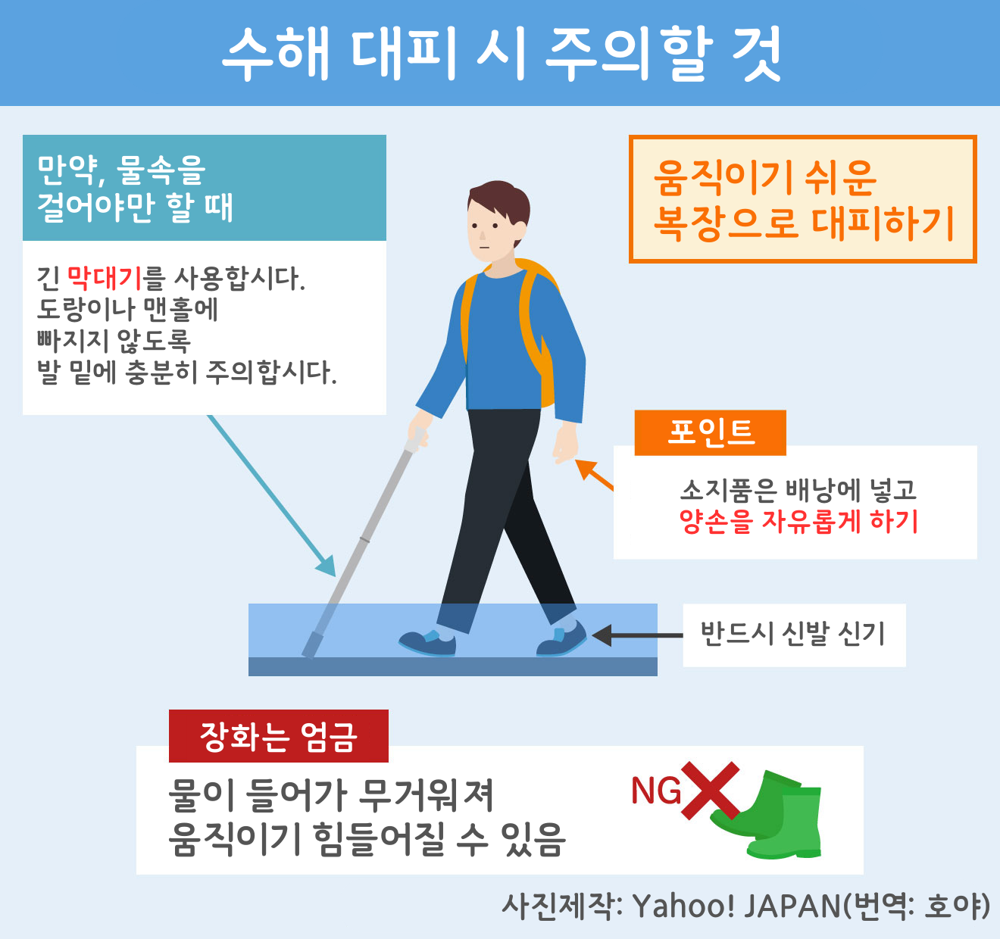
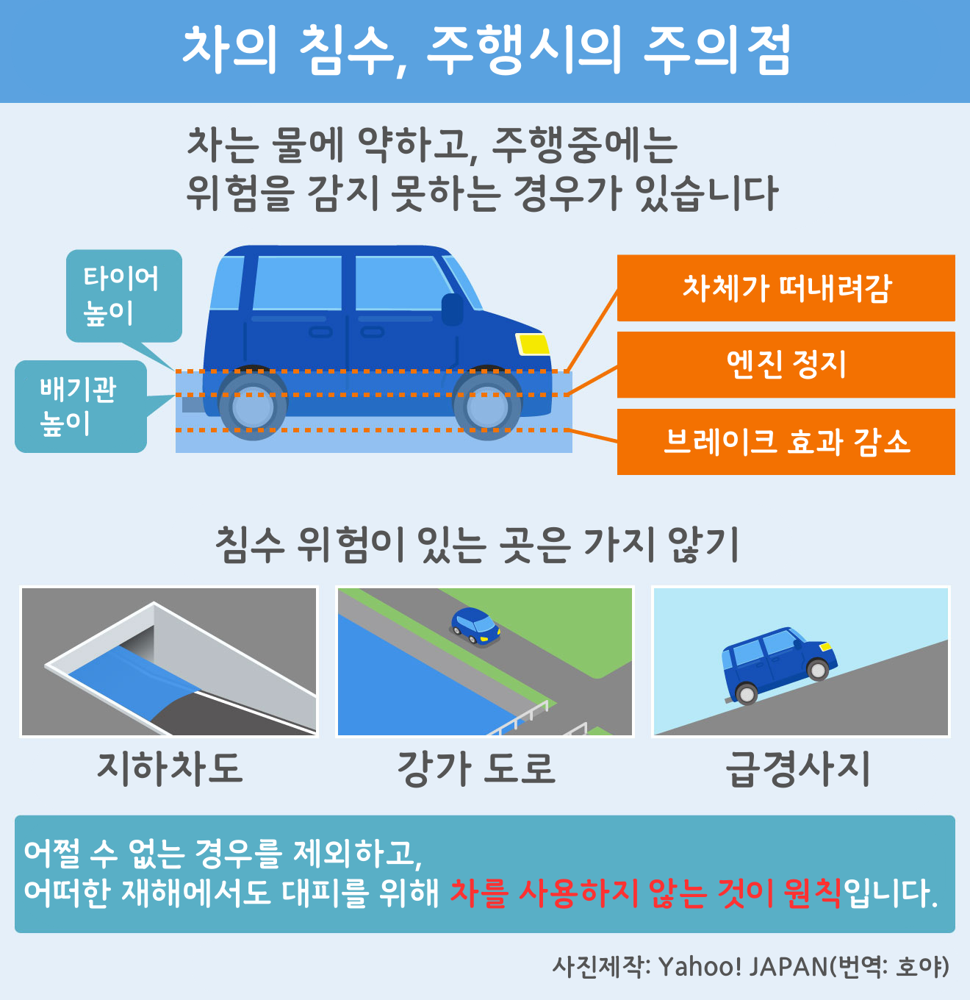
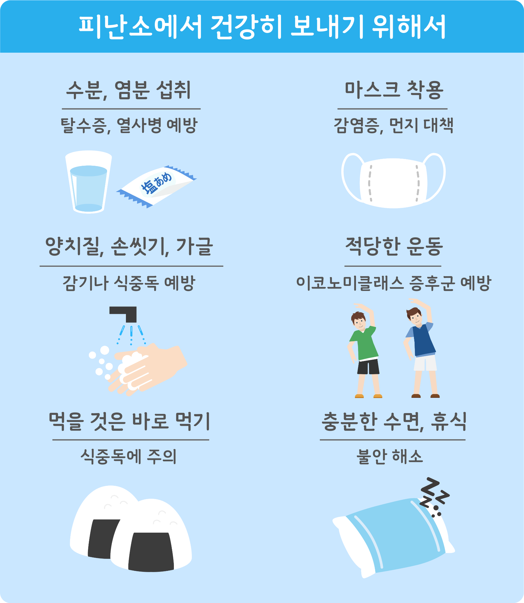
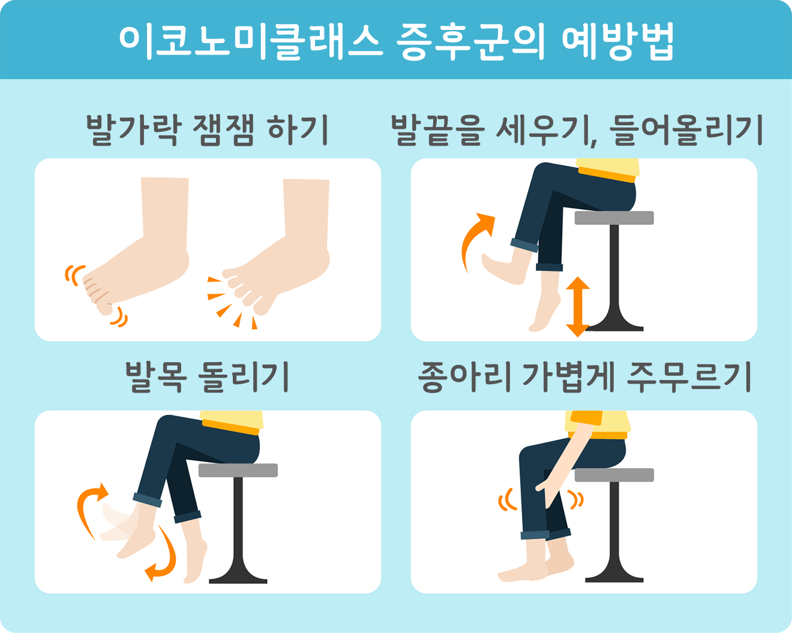

대피 할 때의 주의점
대피소로 가는 것만이 대피가 아님
"대피"는 지정된 대피소로 가는 것이라고만은 할 수 없습니다.
위험하다고 판단한 경우에는 무리하게 대피소로 이동하지 말고 근처의 콘크리트로 지어진 튼튼한 건물의 높은 층(경사면과 반대편)이나 산으로부터 떨어진 조금 높은 장소 등으로 피난해도 괜찮습니다.
이미 밖으로 나가는 것이 불가능한 경우에는, 대피하지 말고 자택에서 가능한 높은 층의 경사면으로부터 반대쪽으로 대피하는 "수직피난"을 합시다.


차에서 재해를 만나면

차가 침수되었을 때의 탈출법
대피소에서의 주의점

열사병에 주의
여름철 대피소에서는 열사병에 주의(특히 어린이나 노인).
갈증을 느끼지 않아도 수시로 수분과 염분을 보충하고 통기성이 좋은 옷을 착용하여 더위를 피합시다.
이코노미클래스 증후군에 주의
대피생활에서 식사나 수분을 충분히 섭취하지 않은 상태에서 좁은 장소에 장시간 앉아 있다가 다리를 움직이지 않으면 혈액순환 불량이 발생하고 혈액이 굳어지기 쉬워 이코노미 클래스 증후군에 걸릴 위험이 있으므로 주의합니다.
